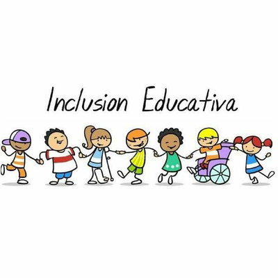

Antes de entrar de lleno en el tema de los principios de la educación inclusiva, es importante dilucidar qué es un principio, según la Real Academia Española (RAE), un principio es:
“Base, origen, razón fundamental sobre la cual se procede discurriendo en cualquier materia.” (La Real Academia Española (RAE), 2014)
En este sentido podemos decir que los principios de la educación inclusiva se refieren a aquellos ideales que se pretenden desarrollar en el proceso educativo, para alcanzar la igualdad de oportunidades; la participación y aprendizaje significativo; desarrollo integral; y finalmente la ciudadanía activa y respeto a los derechos humanos.
Los principios que rigen la educación inclusiva pueden variar de acuerdo con el autor que se consulte, para el desarrollo de este trabajo de investigación se tomo en cuenta los principios propuestos por la Organización de las Naciones Unidas para la Cultura, las Ciencias y la Educación (UNESCO) y los autores Ainscow, M., Booth, T., & Dyson, A
Según la UNESCO los principios de la educación inclusiva son:
1. Aprendizaje y participación para todos: en este punto se rechaza toda la forma de discriminación o exclusión, pues se pretende garantizar pleno acceso al proceso de aprendizaje y en todas las actividades educativas.
2. Respeto a la diversidad: en este punto se establece que debe valorarse y respetarse la diversidad de los estudiantes entendiendo por diversidad a la "variedad, diferencia, desemejanza" (La Real Academia Española (RAE), 2014) en este caso que existe entre los estudiantes y actores del proceso de enseñanza-aprendizaje.
3. Apoyo y colaboración: En este punto se pretende crear redes de apoyo en las cuales se encuentran involucrados todos los actores del proceso enseñanza aprendizaje, es decir, tanto estudiantes, docentes, personal escolar como las familias y la Comunidad en general, permitiendo así que el estudiante reciba el apoyo necesario para tener éxito en su desempeño académico y en su desarrollo integral.
4. Enfoque centrado en el estudiante: al respetarse la diversidad de igual manera, se reconoce que cada estudiante es único y posee diferentes estilos de aprendizaje por ello, en este modelo se adaptan los enfoques pedagógicos, recursos y estrategias para satisfacer las necesidades individuales.
5. Acceso y entornos inclusivos: En este punto se busca eliminar las barreras físicas, comunicativas y de otro tipo que puedan limitar el acceso y la participación de los estudiantes, esto Implica adaptar los espacios a las necesidades de aquellos estudiantes con una discapacidad visual o física, así como adaptar los guiones de clase y las estrategias metodologías para incluir a todos los estudiantes.
6. Educación de calidad para todos: la educación inclusiva tiene por finalidad proporcionar una educación de calidad a toda la población estudiantil. Tomando en cuenta los aspectos antes mencionados relacionados con la educación de calidad, para lograrlo es necesario contar no solo con docentes capacitados, sino también con currículos Inclusivos, metodologías de enseñanza efectivas y sistemas de evaluación justos para todos los estudiantes.
Por su parte Ainscow, Booth y Dyson (2004), proponen los siguientes principios:
1. Participación y pertenencia: en este punto se busca que los estudiantes puedan integrarse a la comunidad educativa y participar activamente en todas las actividades escolares.
2. Eliminación de barreras: En este punto se pretende identificar cuáles son aquellas limitaciones de los estudiantes que no les permiten participar activamente en las actividades académicas o recreativas, ya sean barreras físicas o de naturaleza pedagógica, social o emocional.
3. Ajustes razonables: en este punto la educación inclusiva implica proporcionar ajustes ya sea en los métodos de enseñanza, materiales educativos, evaluaciones o entorno físicos para permitir que el estudiante pueda acceder al proceso educativo.
4. Respeto a la diversidad: en este punto se reconoce que cada estudiante tiene diferentes fortalezas, necesidades, intereses y sobre todo, estilos de aprendizaje, por lo tanto, se busca adaptar los métodos de enseñanza para atender a esa diversidad.
5. Colaboración y trabajo en equipo: en este punto la educación inclusiva requiere de la participación entre todos los actores del proceso de enseñanza - aprendizaje, es decir, desde los estudiantes hasta los padres de familia.
6. Mejora continua: en este punto se expone la necesidad de identificar cuáles áreas necesitan implementar cambios y evaluar los resultados para asegurar que se están logrando los objetivos.
Al analizar ambas fuentes y los principios que en ellas se proponen, podemos decir que, aunque se plantean de formas distintas en esencia tienen una relación, pues lo que se persigue es la participación, la eliminación de barreras, el trabajo colaborativo, la implementación de nuevas estrategias, etc.
